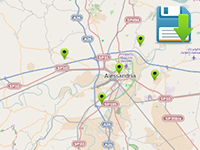

Example of runtime saving 2D markers to PlayerPrefs, and loading of 2D markers from PlayerPrefs.
Usage instructions:
Add this script to map GameObject.
Add this script to map GameObject.
SaveMarkersExample.cs
/* INFINITY CODE 2013-2016 */
/* http://www.infinity-code.com */
using UnityEngine;
namespace InfinityCode.OnlineMapsExamples
{
[AddComponentMenu("Infinity Code/Online Maps/Examples (API Usage)/SaveMarkersExample")]
public class SaveMarkersExample : MonoBehaviour
{
/// <summary>
/// Key in PlayerPrefs
/// </summary>
private static string prefsKey = "markers";
/// <summary>
/// Saves markers to PlayerPrefs as xml string
/// </summary>
public static void SaveMarkers()
{
// Create XMLDocument and first child
OnlineMapsXML xml = new OnlineMapsXML("Markers");
// Appands markers
foreach (OnlineMapsMarker marker in OnlineMaps.instance.markers)
{
// Create marker node
OnlineMapsXML markerNode = xml.Create("Marker");
markerNode.Create("Position", marker.position);
markerNode.Create("Label", marker.label);
}
// Save xml string
PlayerPrefs.SetString(prefsKey, xml.outerXml);
PlayerPrefs.Save();
}
/// <summary>
/// Use this for initialization
/// </summary>
private void Start()
{
// Try load markers
TryLoadMarkers();
}
/// <summary>
/// Try load markers from PlayerPrefs
/// </summary>
private void TryLoadMarkers()
{
// If the key does not exist, returns.
if (!PlayerPrefs.HasKey(prefsKey)) return;
// Load xml string from PlayerPrefs
string xmlData = PlayerPrefs.GetString(prefsKey);
// Load xml document
OnlineMapsXML xml = OnlineMapsXML.Load(xmlData);
// Load markers
foreach (OnlineMapsXML node in xml)
{
// Gets coordinates and label
Vector2 position = node.Get<Vector2>("Position");
string label = node.Get<string>("Label");
// Create marker
OnlineMaps.instance.AddMarker(position, label);
}
}
}
}